Guide
From zero to your first
edited card.
The workbench runs locally. Start with shared original card data, extract it when needed, translate it, and create a Shoggoth-ready export.
Prerequisite
Install the workbench
You need uv and Python 3.12 or newer. Clone the repository, install its dependencies, and start the local server.
git clone <repository-url>
cd unspeakable-translations
uv sync
uv run unspeakable-translations serveAutomatic translation is optional. The repository README explains TranslateGemma and the supported cloud providers for structured card recognition.
Part 1
Get original card data
Original images, extracted source text, and card metadata are shared by every translation. First decide whether that shared project already exists.
YesDownload it for local editing
- 1Open the shared projects
On the dashboard, find the scenario in the list of available projects.
- 2Choose languages
Select the translations you want locally. The shared original data is downloaded with the project.
- 3Download the project
Choose Download project. Afterwards it appears under Projects on this device and can be opened for editing.
- 4Check for updates later
The dashboard indicates remote changes. Review conflicts before replacing locally edited data.
NoCreate a new original project
Create the scenario locally and add the original card images. Target-language translations are added separately.

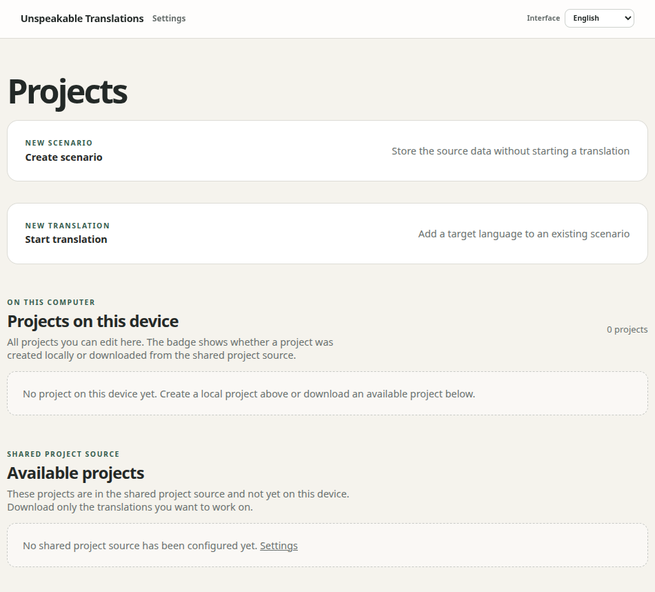
On the dashboard, choose Create scenario.

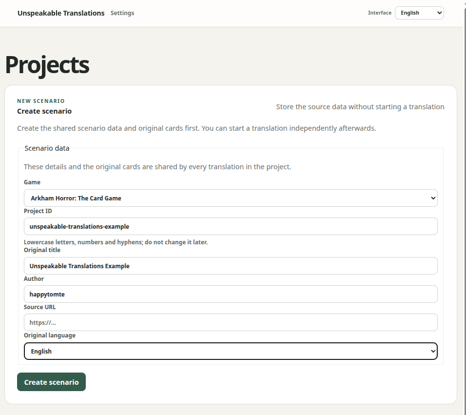
Fill in the project details. The project ID becomes part of the folder name and should not be changed later.

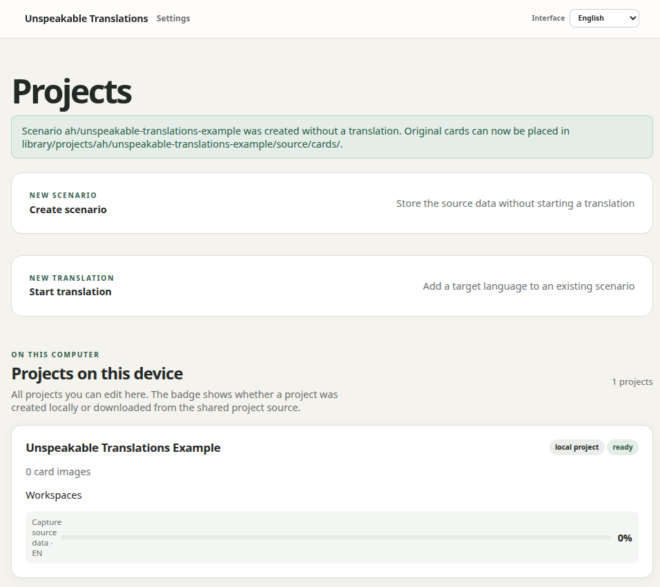
After creation, the project appears under Projects on this device. The green notice shows where its source cards belong.

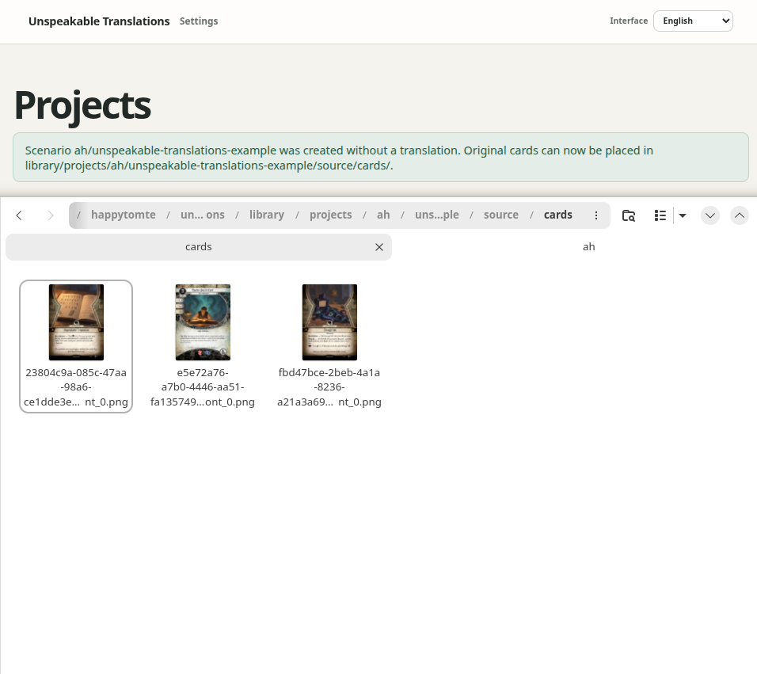
Copy the original card images into the displayed source/cards folder. Match sides either as <filename>-1.png for the front and <filename>-2.png for the back, or as <filename>-front.png and <filename>-back.png.
Part 2 · optional
Extract card data separately
Extraction captures the printed source-language text and metadata. It does not translate anything when started from the original-data page.
YesNothing else is required
Review the source fields against the card images. If they are correct, continue with the translation.
NoExtract them during the translation process
Initial card data extraction can be done in one single step together with the translation.
NoExtract them with an LLM
- 1Open the original-data project
Use this view when you want extraction only, without creating a translation.
- 2Choose single-card or batch extraction
Use Prepare for LLM (single) on one card, or Prepare for LLM (batch) for many cards.
- 3Apply and review the result
Compare names, traits, rules, flavor, and metadata with the image before marking the card complete.
Part 3
Prepare card data translation (once)
In order to create LLM-translations with official in-game wordings, you have to download the examples once for the languages you work with.

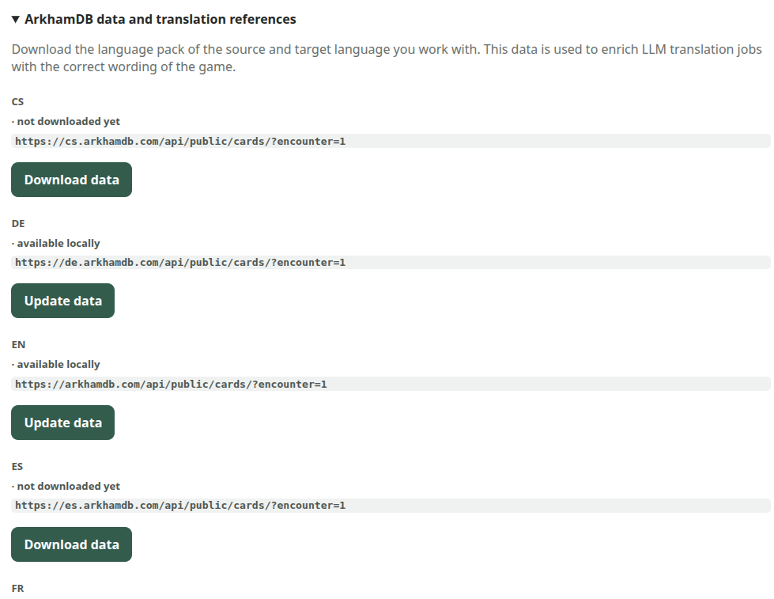
In the Settings, open ArkhamDB data and translation references to download the needed language packs.
Part 4
Translate card data
Create a target-language workspace. The available LLM workflow depends on whether the shared source fields are already available.
YesTranslate from already-extracted-data only
- 1Create or open the translation
Open the translation workspace for a scenario.
- 2Choose a workflow
Translate one card with `Prepare for LLM (single)`, or use the batch-button `Prepare for LLM using only extracted data` prepare a batch. Working on extracted data does not require the LLM to read card images and save tokens.
- 3Apply
With the single-card-workflow, the LLM result must be pasted into the JSON textfield below the card and be applied (see example below). After a successful batch run, the button `Apply batch results` must be used.
- 4Review
Check terminology, formatting, protected tokens, and warnings. The imported values remain editable.

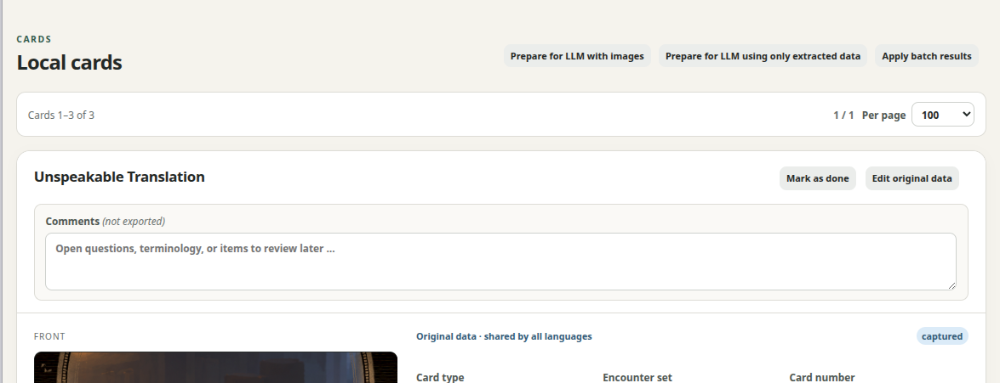
Batch-LLM buttons

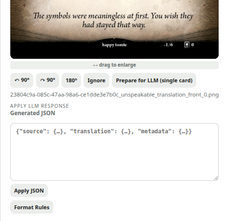
Single-Card LLM functionality
NoExtract and translate in one pass
- 1Start from the translation workspace
Prepare a single card or a batch. Jobs with missing source fields include the card image and request extraction plus translation.
- 2Apply the translated fields
Translation values are written to this language workspace. Newly detected original values remain separate proposals.
- 3Review the original-data proposal
Use Show diff to compare the card image, existing shared values, and the proposal. Only choose Overwrite original data after verification.
ExampleSingle-card LLM hand-off

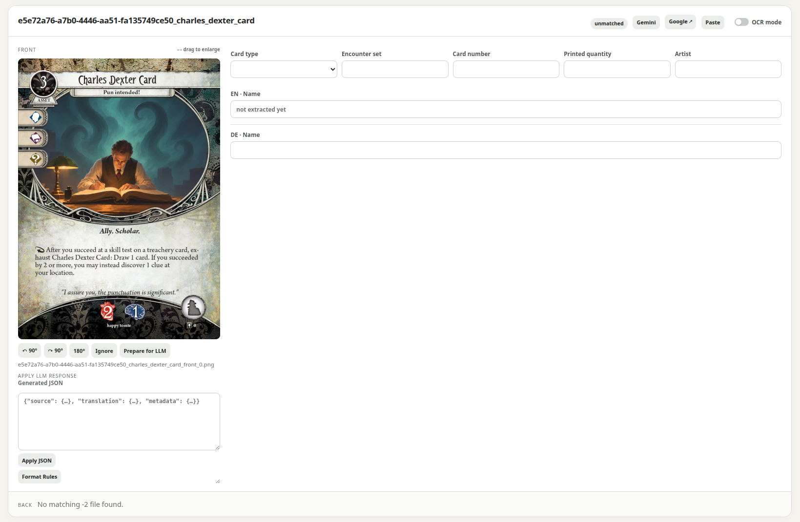
Open a card and first check the captured source text and metadata against the image.

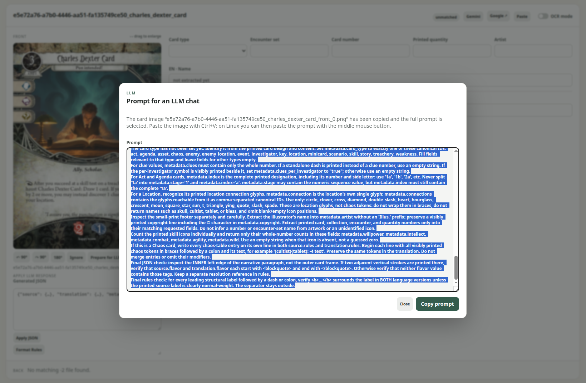
Choose Prepare for LLM chat. The workbench builds a prompt containing the card data, formatting rules, target language, and expected JSON structure.

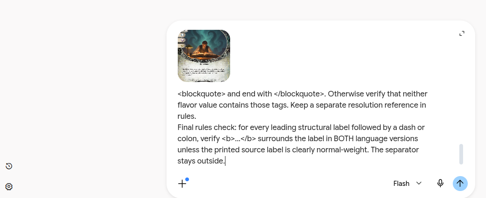
Paste the copied prompt into your LLM chat. Include the image only when the job requests image extraction.

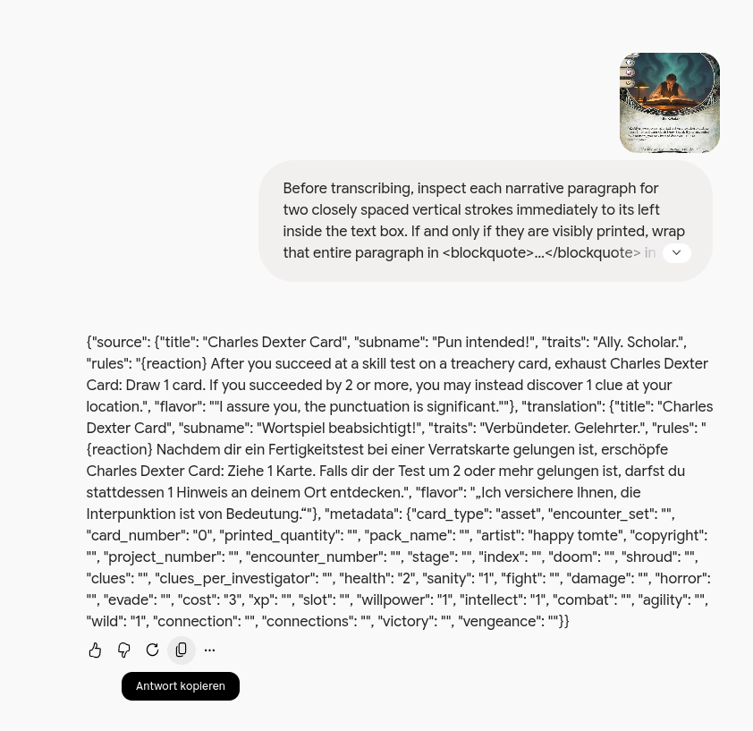
Copy the complete JSON response from the model without changing its field names.

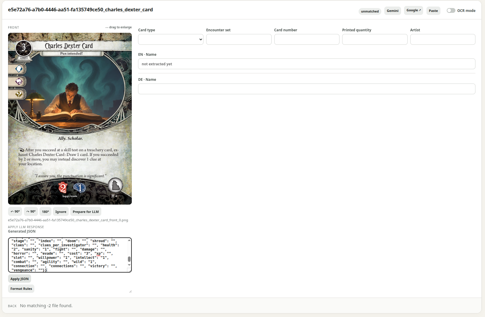
Back in the workbench, paste the response into the import dialog.

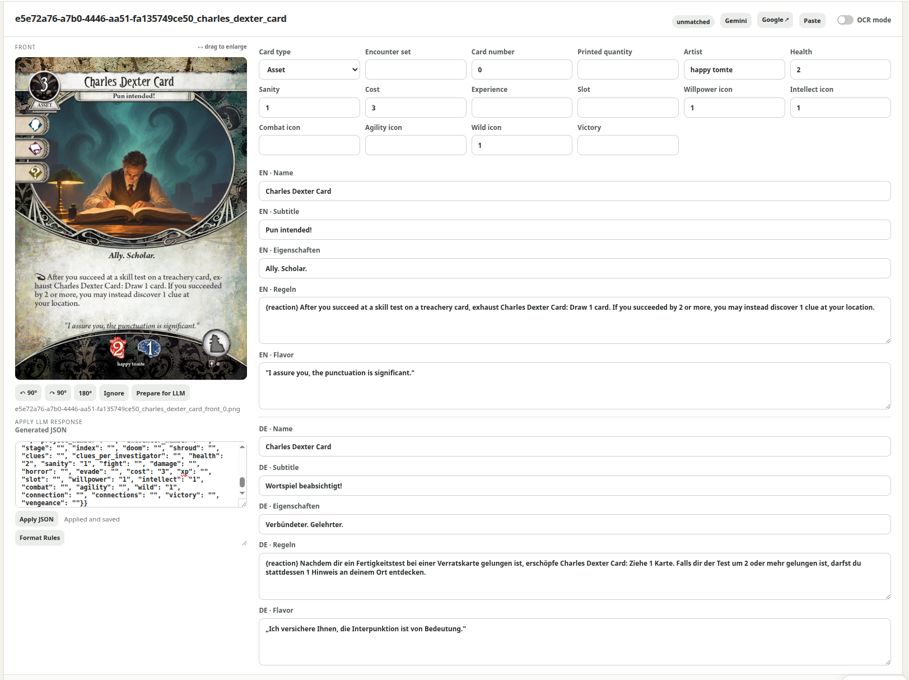
Apply the JSON. The translated values remain editable and should still be reviewed.
Part 5
Export to Shoggoth
Finish the content review before creating the file that Shoggoth consumes.
- Review names, traits, rules, flavor text, and card metadata.
- Check that game icons use canonical tokens such as
{action},{fast}, and{bullet}. - Check bold, italic, blockquotes, paragraphs, and protected placeholders.
- Check front/back assignments and any deliberately hidden standard backs.
- Resolve relevant review warnings and local notes; comments themselves are not exported.
When the cards are ready, choose Export Shoggoth JSON on the project page and open the resulting file in Shoggoth for a final visual check.

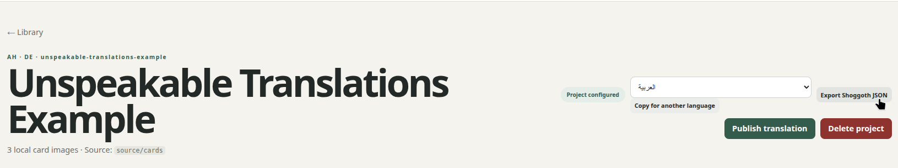
Open the exported JSON in Shoggoth. It contains the translated card data and references to the card images.